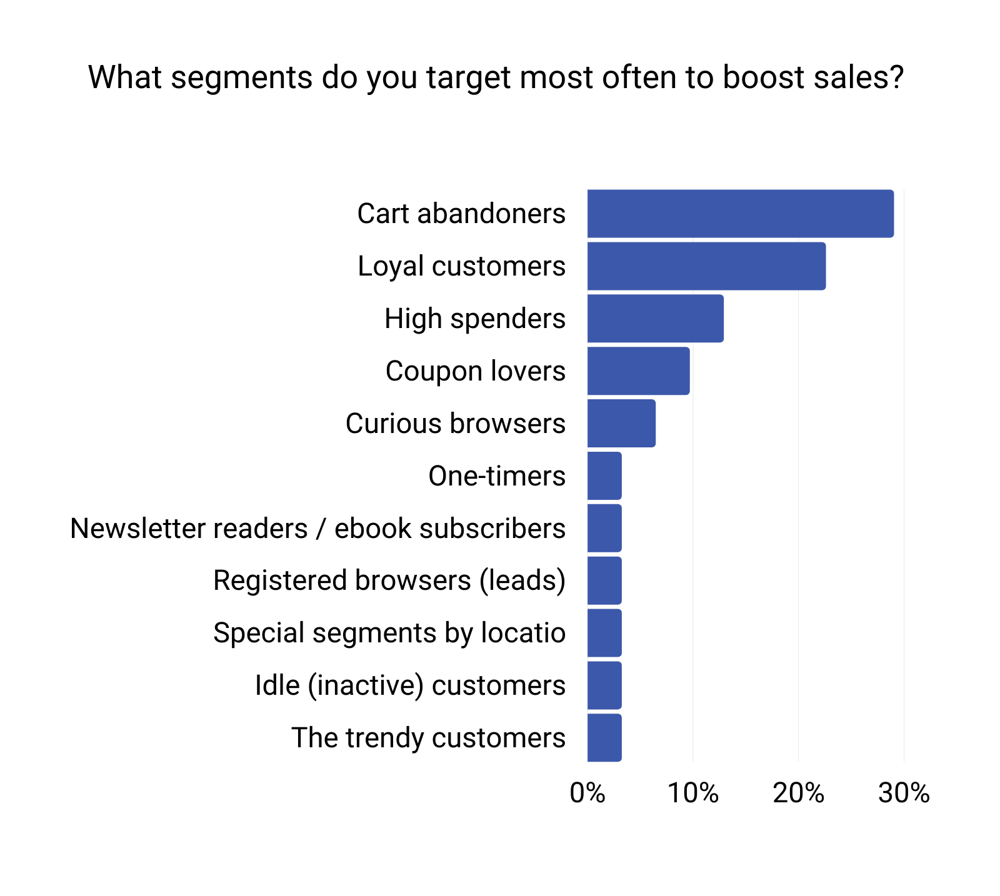

Customer Segmentation for E-commerce
Project Description:
Utilize clustering algorithms to segment an e-commerce company's customer base. Analyze purchase history, browsing behavior, and demographic data to group customers into distinct segments. Visualize the results for better marketing and product recommendation strategies.
Details about the project:
Extracted and preprocessed customer transaction data, including purchase history and browsing behavior.
Employed clustering techniques such as K-means and hierarchical clustering to group customers into distinct segments.
Resulted in customized marketing campaigns, leading to a 20% increase in conversion rates among targeted segments.

Healthcare Data Analysis for Disease Diagnosis
Project Description:
Analyzed electronic health records (EHR) data to predict the likelihood of disease diagnosis and improve early detection.
Details about the project:
Collected and cleaned EHR data, including patient demographics, medical history, and lab results.
Utilized machine learning algorithms, including SVM and decision trees, for disease prediction.
Achieved an accuracy rate of 92% for early diagnosis of the target disease, potentially saving lives through early intervention.